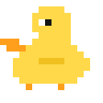

VirtualBuddyIt works on your PC, researches the web with cited sources, and answers your questions. And it grows: the first time you ask for something new it works it out, then writes itself a tool, so the next time is instant.
Every skill declares the phrasings it answers to. Your words get scored against all of them, and the best one wins. This box runs that same scoring in your browser, so the match below is real, not a script.
Results are samples. The matching is the real thing.
It turns a topic into several searches, reads up to six pages at once, and writes an answer where every claim carries a numbered citation you can check. Plain HTTP first because it is fast, and a real Chromium only when a page is JavaScript-only or wants clicking.
to walk 48,787 files into a graph of folders and files. Ask it anything about your own machine afterwards.
Ask for something it has no skill for and it works it out the long way, writing and running code as it goes. Then it turns that work into a tool of its own, runs the tool on the same question, and keeps it only if it gives the same answer. Next time, a request like that skips straight to the tool. A tool that keeps failing is retired.
the same kind of question, the first time and the second. Measured on a request it had never seen before.
Where that file went, what is eating your disk, what you touched today, what is in a folder without opening it.
Create folders, write and edit files, close a program that is hogging the CPU, keep your to-do list. It never touches Windows or Program Files, never overwrites without being asked, and deleting goes to the Recycle Bin.
Type it in the panel, however you would say it out loud. Voice is coming, once it can be set up in one click and answer back.
Hashed word and character n-grams score your sentence against every skill. No model to download, no embedding server, no wait.
Manual mode shows the match and its confidence first; auto mode just runs it. Either way you see each step as it happens, and a clock, so nothing ever looks stuck. Anything irreversible asks first.
The brain is NVIDIA's free API: paste a free key on first run and it uses a 550B model, no graphics card needed. And it grows. Ask for something new and it works it out the long way, then writes itself a tool, tests it against the answer it just gave, and keeps it. Next time a request like that is one quick step: 11.6 seconds the first time, 0.7 after.
Not a wall of scraped page. Six sources, read in parallel and turned into a short answer with a numbered citation on every claim.
"Find the best monitors and open the top result" becomes two steps you can see before either of them runs.
Ask it to apply for jobs and it says plainly: it can find and open the pages, but signing in and filling the form is yours.
29MB installer. No admin rights needed, and the setup asks whether you want it to start when you sign in. On first run it asks for a free API key from build.nvidia.com: paste it once and it is saved on your PC only. Nothing to download, no graphics card needed.
Your buddy appears in the bottom right of the screen. Click it to open the panel, drag it wherever you like, right click it for settings.
Or run it from source, on any OS
# Windows, macOS or Linux. Python 3.10+
git clone https://github.com/SahilSidhu7/VirtualBuddy
cd VirtualBuddy
pip install -r requirements.txt
python run.py
Prefer a terminal? python run.py --cli.
~/.virtualbuddy, in formats you can open yourself. Uninstalling leaves them alone.